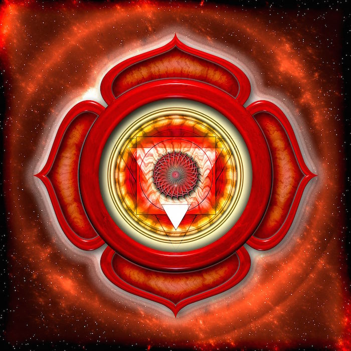
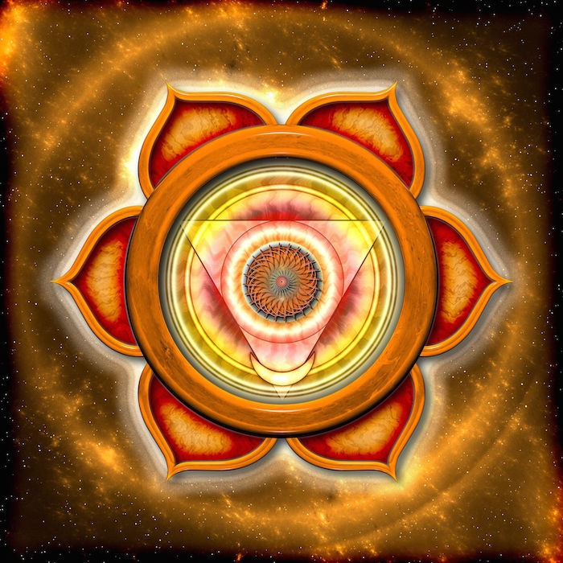
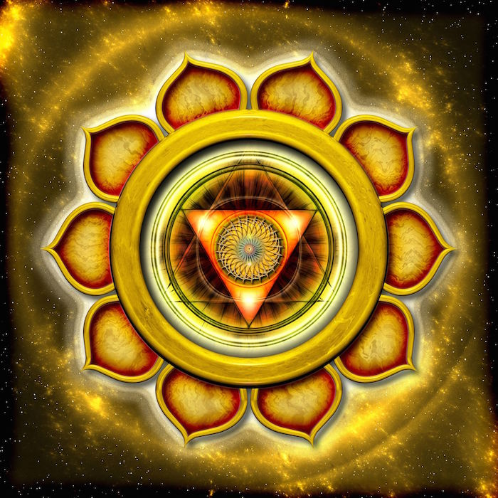
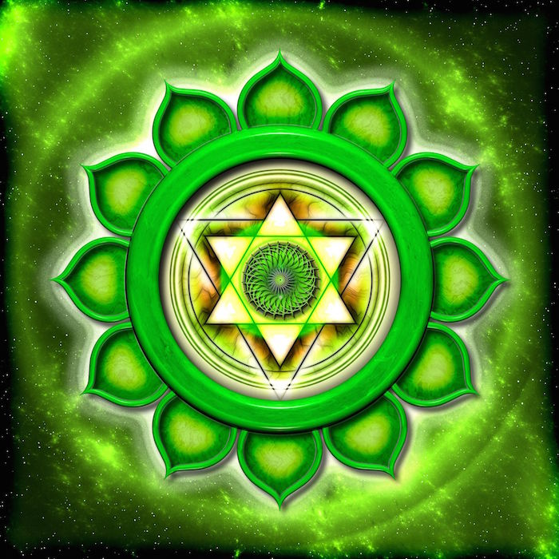
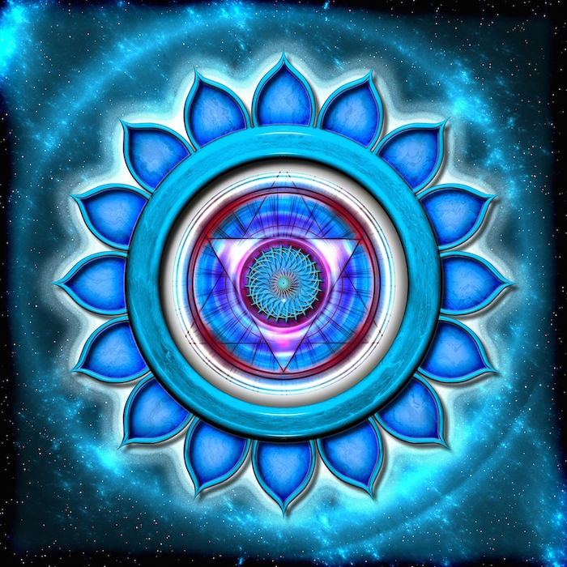
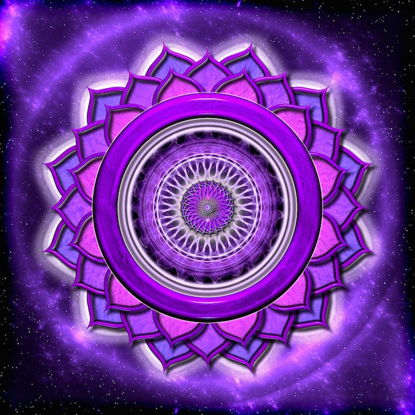

| Root (Muladhara) |
 |
Base of spine |
Red |
Earth |
Survival, grounding, security |
Feeling safe, grounded, secure |
Anxiety, fear, instability |
Yoga, meditation, grounding exercises, nature walks, red foods, red crystals |
| Sacral (Svadhisthana) |
 |
Below navel |
Orange |
Water |
Creativity, sexuality, emotions, pleasure |
Emotional balance, creativity, healthy sexuality |
Emotional instability, sexual dysfunction, creative blocks, guilt, lack of passion |
Yoga, meditation, creative expression, dancing, water activities, orange foods, orange crystals |
| Solar Plexus (Manipura) |
 |
Above navel |
Yellow |
Fire |
Personal power, self-esteem, confidence |
Strong willpower, self-worth |
Low self-esteem, lack of confidence, power struggles, digestive issues, lack of motivation |
Yoga, meditation, affirmations, self-care, core exercises, sunlight, yellow foods, yellow crystals |
| Heart (Anahata) |
 |
Center of chest |
Green |
Air |
Love, compassion, relationships, forgiveness |
Open-hearted, loving, harmonious |
Lonliness, jealousy, anger, resentment, heartache, lack of empathy |
Yoga, meditation, heart-opening exercises, self-love practices, green foods, green crystals |
| Throat (Vishuddha) |
 |
Throat |
Blue |
Ether/Sound |
Communication, self-expression, truth |
Clear communication, speaking truth, listening, confident expression |
Communication issues, fear of speaking, throat problems, dishonesty, social anxiety |
Yoga, meditation, journaling, singing, chanting, herbal teas, speaking truth, blue foods, blue crystals |
| Third Eye (Ajna) |
|
Forehead, between eyes |
Indigo |
Light |
Intuition, insight, wisdom, imagination |
Strong Intuition, imaginative, clear vision |
Confusion, lack of clarity, lack of direction, headaches, nightmares, delusions, lack of imagination |
Yoga, meditation, journaling, visualization, dreamwork, star-gazing, indigo foods, indigo crystals |
| Crown (Sahasrara) |
 |
Top of head |
Violet/White |
Divine/Spirit |
Connection to the Universe, spirituality, enlightenment |
Connected to higher self, deep awareness, insightful, spiritual awakening, divine guidance |
Disconnection from spirit, lack of purpose, close-mindedness, spiritual crisis, depression |
Yoga, meditation, prayer, energy healing, spiritual practices, violet foods, violet crystals |